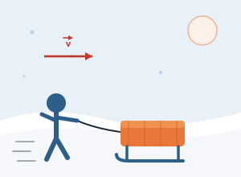
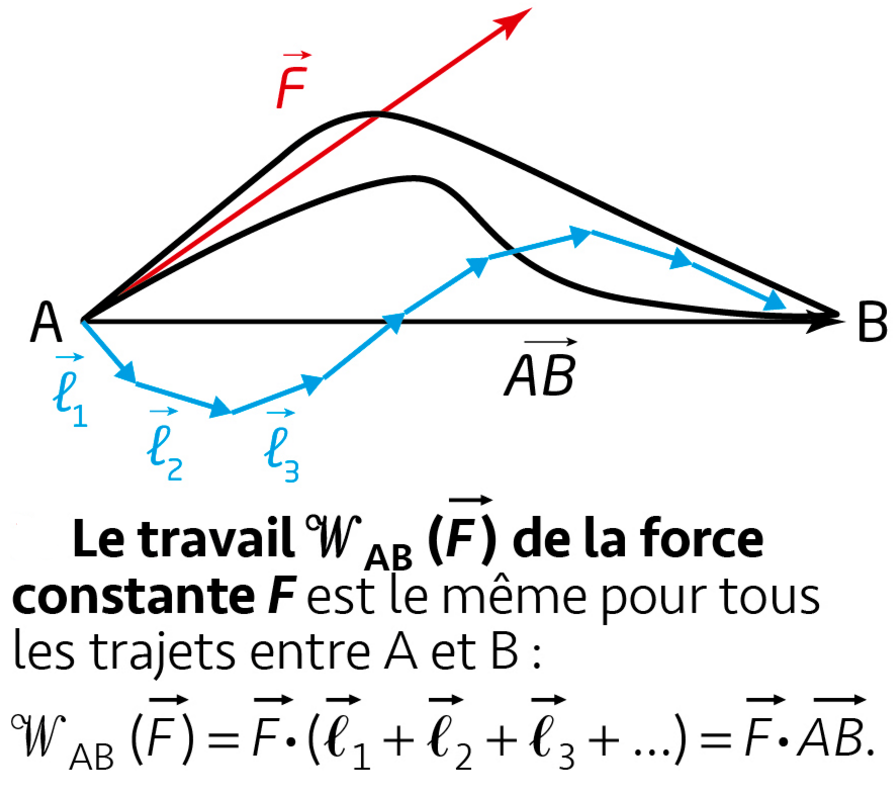
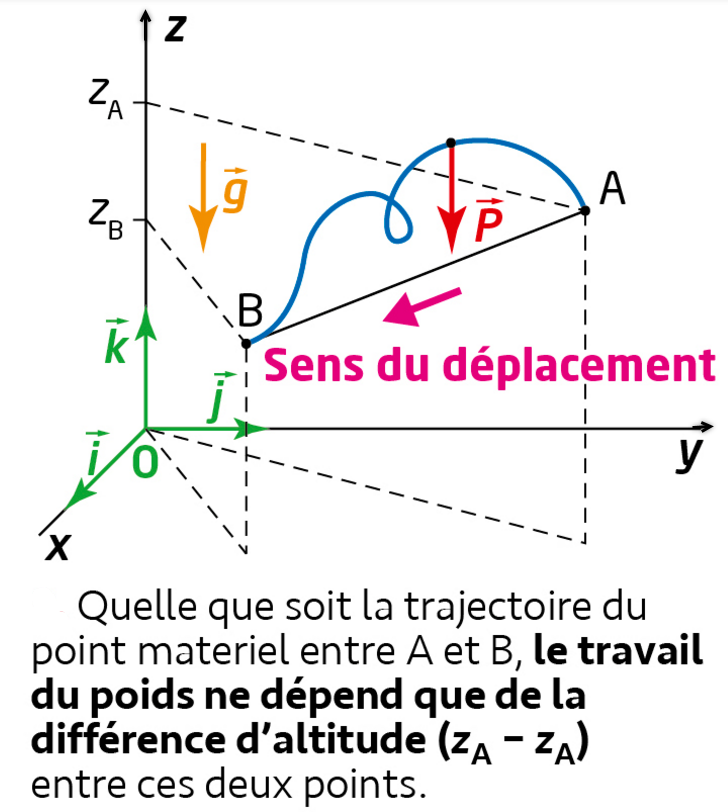
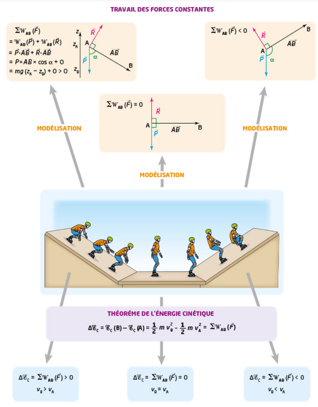

Un système en mouvement possède de l'énergie du fait de sa vitesse : c'est l'énergie cinétique, notée EC.
Le travail traduit la façon dont une force F transfère de l'énergie à un système lors d'un déplacement AB. Pour une force constante :
- W > 0 si 0° ≤ α < 90° : la force favorise le déplacement — le travail est moteur.
- W = 0 si α = 90° : la force n'a aucun effet sur le déplacement — le travail est nul.
- W < 0 si 90° < α ≤ 180° : la force s'oppose au déplacement — le travail est résistant.
Fais varier l'angle α entre la force F et le déplacement AB avec le curseur, et observe comment le signe de cos α — donc du travail — évolue.
La variation d'énergie cinétique d'un système entre deux points A et B est égale à la somme des travaux des forces qui s'exercent sur lui pendant ce déplacement.
- ⚖️ Théorème de l'énergie cinétique
- 🛵 Énergie cinétique — sécurité routière (scooter)
- 🏃 Énergie cinétique — animation générale
📝 Application directe — Théorème de l'énergie cinétique

① Définition
Une force est dite conservative lorsque la valeur de son travail entre deux points A et B ne dépend pas du chemin suivi par le système.
② Propriété clé
Seuls comptent le point de départ et le point d'arrivée : le trajet réellement parcouru entre les deux n'a aucune influence sur la valeur du travail.
③ Exemple
Le poids est une force conservative : son travail ne dépend que de la différence d'altitude entre A et B.

Quel que soit le trajet suivi entre A et B, le travail d'une force constante F est le même : WAB(F) = F·(ℓ₁+ℓ₂+ℓ₃+…) = F·AB.
Cas du poids : quelle que soit la trajectoire suivie entre A et B, son travail ne dépend que de la différence d'altitude (zA − zB) entre les deux points.Au voisinage de la Terre, un système situé à l'altitude z (axe orienté vers le haut) possède une énergie potentielle de pesanteur :
Lorsque le travail d'une force dépend du chemin suivi, la force est dite non conservative. Les forces de frottement en sont l'exemple type : sur une trajectoire rectiligne, pour une force de frottement d'intensité constante f, opposée au mouvement :
- Conservative : le travail ne dépend que du point de départ et du point d'arrivée (poids, force électrique, force de rappel d'un ressort…).
- Non conservative : le travail dépend du trajet parcouru — plus le trajet est long, plus l'énergie « dissipée » est importante (frottements, résistance de l'air…).
A et B sont fixes. Déplace le système sur le trajet, fais varier la sinuosité, la distance AB ou le coefficient de frottement : observe que le travail du poids (conservative) ne dépend que du point de départ et d'arrivée, alors que le travail du frottement (non conservative) s'accumule au fil du chemin parcouru. (valeur par défaut : m = 2,0 kg)
Accompli jusqu'ici
Total A→B (fixe)
Le total ne bouge pas quand tu déplaces le système : il ne dépend que de l'altitude de A et de B, jamais du chemin suivi.
Accompli jusqu'ici
Total A→B (fixe à trajet donné)
Ce total, lui, change dès que tu augmentes la sinuosité ou f : il dépend directement du chemin suivi.
📝 Application directe — Travail du frottement
L'énergie mécanique Em d'un système est la somme de son énergie cinétique et de son énergie potentielle (de pesanteur, ici) :
- L'énergie mécanique se conserve au cours du temps : ΔEm = 0.
- Il y a conversion intégrale d'EC en EP et réciproquement.
- Exemples : chute libre, oscillations d'un pendule sans frottement.
- L'énergie mécanique diminue au cours du temps (elle ne se conserve plus).
- La variation d'Em est égale à la somme des travaux des forces non conservatives.
- L'énergie « perdue » par le système est transférée au milieu extérieur (chaleur, son…).
Le pendule oscille de part et d'autre de sa position d'équilibre. Observe comment EC (rouge) et EP (vert) oscillent en opposition — quand l'une augmente, l'autre diminue exactement d'autant — alors que leur somme Em (bleu) reste constante en l'absence de frottement. Active le frottement pour voir l'amplitude des oscillations, et Em, diminuer progressivement.
La balle tombe en chute libre depuis une hauteur h. Observe comment EC augmente pendant que EP diminue, alors que Em reste constante en l'absence de frottement. Active le frottement pour voir Em diminuer.
2. Active le frottement (piste rugueuse). Que devient l'énergie mécanique ? Vers quelle autre forme d'énergie est-elle convertie ?
📝 Application directe — Utiliser ΔEm pour trouver un travail de frottement
- Définir le système, l'état initial (A) et l'état final (B), et faire l'inventaire des forces qui s'exercent sur lui entre A et B.
- Calculer EC(A) et EC(B) avec EC = ½mv².
- Calculer ou exprimer le travail de chaque force entre A et B (W = F×AB×cos α pour une force constante).
- Écrire le théorème : ΔEC = EC(B) − EC(A) = Σ WAB(F), puis isoler l'inconnue cherchée.
- Identifier les forces qui s'exercent sur le système : sont-elles toutes conservatives (poids seul) ou y a-t-il des frottements ?
- Calculer Em = EC + EP à l'état initial et à l'état final (choisir une origine pour EP, souvent au point le plus bas).
- Si aucun frottement : poser Em(A) = Em(B) et résoudre.
- Si frottements : calculer ΔEm = Em(B) − Em(A) ; cette variation est égale au travail des forces non conservatives.
___) pour calculer et tracer EC(t), EP(t) et Em(t), puis exécute-le.2. Étude d'un mouvement plan
Retrouver les lois de la mécanique avec un mouvement plan.
▶ Ouvrir l'activité3. La balle de golf
Peut-on négliger le frottement de l'air sur une balle de golf ?
▶ Ouvrir l'activité5. La pesanteur sur Mars
Détermination de la valeur du champ de pesanteur sur la planète Mars.
▶ Ouvrir l'activitéExercice 1 — Énergie cinétique
Exercice 2 — Énergie potentielle de pesanteur
Exercice 1 — Théorème de l'énergie cinétique
Exercice 2 — Travail du frottement à partir d'une variation d'énergie mécanique
Exercice 1 — Chute avec frottement : retrouver le travail des frottements
Résous les deux énigmes mécaniques, dans l'ordre, pour découvrir les 2 chiffres du digicode.
Un système de masse m = 2,0 kg, lâché sans vitesse initiale, tombe en chute libre. Sa vitesse après avoir parcouru une hauteur de chute h = 0,80 m (sans frottement, g = 10 N·kg⁻¹) vérifie ½mv² = mgh. Quelle est la valeur de v (en m·s⁻¹) ? C'est le premier chiffre du code.
🎉 Digicode déverrouillé !
Bravo : chute libre et frottement n'ont plus de secret pour toi !

Synthèse : le signe du travail total des forces appliquées entre A et B détermine si la vitesse augmente, diminue ou reste identique entre ces deux points.Énergie cinétique & travail
- EC = ½×m×v²
- WAB(F) = F×AB×cos α ; moteur si >0, résistant si <0, nul si α=90°
- Théorème de l'énergie cinétique : ΔEC = Σ WAB(F)
Forces conservatives / non conservatives
- Conservative : travail indépendant du chemin suivi (le poids)
- EP = m×g×z
- Non conservative : le frottement, W = −f×AB sur une trajectoire rectiligne
Énergie mécanique
- Em = EC + EP
- Sans frottement : Em se conserve (ΔEm = 0)
- Avec frottement : ΔEm = Σ WAB(forces non conservatives)
- Système / point matériel
- Objet étudié, modélisé par un point matériel lorsque ses dimensions sont négligeables devant celles du problème considéré.
- Énergie cinétique (EC)
- Énergie que possède un système du fait de son mouvement : EC = ½mv².
- Travail d'une force (W)
- Grandeur qui traduit le transfert d'énergie assuré par une force lors d'un déplacement : W = F×AB×cos α.
- Théorème de l'énergie cinétique
- ΔEC = Σ WAB(F) : la variation d'énergie cinétique entre deux points est égale à la somme des travaux des forces appliquées.
- Force conservative
- Force dont le travail entre deux points ne dépend pas du chemin suivi (exemple : le poids).
- Poids (P)
- Force exercée par la Terre sur un système, verticale et dirigée vers le bas : P = m×g. C'est une force conservative.
- Force non conservative
- Force dont le travail dépend du chemin suivi (exemple : le frottement).
- Énergie potentielle de pesanteur (EP)
- Énergie liée à l'altitude d'un système dans le champ de pesanteur : EP = mgz.
- Énergie mécanique (Em)
- Somme de l'énergie cinétique et de l'énergie potentielle d'un système : Em = EC + EP.
- Conservation de l'énergie mécanique
- En l'absence de frottement, Em reste constante au cours du mouvement (ΔEm = 0).
- Chute libre
- Mouvement d'un système soumis uniquement à son poids, sans frottement ni résistance de l'air ; l'énergie mécanique s'y conserve.
🎬 Conservation de l'énergie mécanique
Paul Olivier · 6 min 17
🎬 Le travail d'une force : formule et calcul
Paul Olivier · 3 min 57
🎬 Le travail d'une force ✏️
Paul Olivier · 4 min 34
🎬 Le travail du poids — Forces conservatives
Paul Olivier · 3 min 52
🎬 Énergie cinétique : calculer une vitesse ?
Paul Olivier · 3 min 27
🎬 Théorème de l'énergie cinétique ✏️ Exercice
Paul Olivier · 6 min 38
🎬 Énergie mécanique ✅ Cinétique & Potentielle
Paul Olivier · 6 min 09
🎬 Force conservative
Khan Academy · 5 min 37
🎬 Schéma bilan : Énergie mécanique
Hatier Physique-Chimie 1re · 2 min 32
🎬 Schéma bilan : Théorème de l'énergie cinétique
Hatier Physique-Chimie 1re · 2 min 04
🛼 PhET — Energy Skate Park
Conservation de l'énergie mécanique, en français.
🎢 PCCL — Montagnes russes
EC, EP, Em le long du parcours.
🎬 PCCL — Pendule simple
Conservation de l'énergie mécanique.
🎬 PCCL — Pendule, activité expérimentale
EC / EP au cours du mouvement.
⚖️ PCCL — Théorème de l'énergie cinétique
Application et vérification.
🛵 PCCL — Énergie cinétique, sécurité routière
Cas d'un scooter.
🏃 PCCL — Énergie cinétique
Animation générale.
📝 QCM Hatier — Chapitre 13
Théorème de l'énergie cinétique.
📝 QCM Hatier — Chapitre 14
Énergie mécanique.
p292 n°15-16, p296 n°32-33, p298 n°41, p312 n°18-19, p315 n°32, p317 n°37, n°39, p318 n°42, p319 n°43 (document Excel disponible pour l'exercice n°39)
Les conducteurs contiennent des porteurs de charge libres de se déplacer : les électrons libres dans les métaux, les ions dans les solutions.
- En l'absence de tension électrique, les porteurs de charge sont animés d'un mouvement désordonné.
- Sous tension électrique, les électrons et les anions se déplacent vers la borne positive du générateur (tout en restant dans leur milieu respectif), les cations vers la borne négative.
Le débit de charges électriques correspond à la quantité de charges qui traversent la section d'un circuit par unité de temps. Ce débit est appelé intensité du courant électrique :
📖 Mode d'emploi & légende
La section (disque orange) est un endroit fixe du circuit — ce n'est pas une portion de fil qui se déplacerait dans le temps.
- Clique sur Démarrer : les charges (points bleus) circulent dans le fil.
- La section s'illumine à chaque passage d'une charge, en même temps que le compteur Q — c'est ce flash qu'il faut suivre.
- Fais glisser les repères orange (t et t+Δt) sur la frise ou le graphique pour choisir un intervalle.
- Lis Δt, ΔQ, I dans les cases orange en bas.
Charges Q
0 C
Durée
0,0 s
I = Q/t
0,0 A
Δt
0,0 s
ΔQ
0 C
I=ΔQ/Δt
0,0 A
📝 Application directe — Intensité et débit de charges
Une source de tension est un dipôle qui alimente un circuit. Sa caractéristique est le graphique U = f(I) donnant la tension à ses bornes en fonction de l'intensité qui la traverse.
La tension U reste égale à la f.é.m. E, quelle que soit l'intensité I : la caractéristique est une droite horizontale.
Une résistance interne r modélise les imperfections de la source. La caractéristique est une droite décroissante.
- Une source réelle de tension se modélise par un montage équivalent : une source idéale de tension E en série avec une résistance interne r.
- E (en V) est la tension à vide (tension aux bornes quand I = 0).
- Plus l'intensité I fournie par la source augmente, plus la tension U à ses bornes diminue : c'est la conséquence pratique de la résistance interne.
- Le coefficient directeur (la pente) de la caractéristique U = f(I), en valeur absolue, donne r.
📖 Comment lire ce graphique
Règle E et r, puis déplace I : observe l'écart entre la droite idéale (verte, U = E) et la droite réelle (rouge, U = E − r×I). Le segment rouge vertical est la chute de tension r×I due à la résistance interne.
U idéale
4,50 V
U réelle
3,70 V
Chute r×I
0,80 V
Voici les mesures obtenues au voltmètre et à l'ampèremètre pour une pile étudiée en TP.
| I (A) | 0 | 0,20 | 0,40 | 0,60 | 0,80 |
|---|---|---|---|---|---|
| U (V) | 4,50 | 4,30 | 4,10 | 3,90 | 3,70 |
📝 Détermine E et r à partir du graphique / tableau ci-dessus
2. Calcule r à partir de deux points de mesure éloignés, par exemple I = 0 et I = 0,80 A.
🎬 Caractéristique d'une PILE, source « non idéale » de tension
PCCL · Générateur, Physique-Chimie 2e/1re · 4 min 52
Une source de tension fournit de la puissance électrique à un circuit. Cette puissance est égale à la somme des puissances des dipôles passifs du circuit. La puissance électrique d'un convertisseur est le produit de la tension à ses bornes par l'intensité qui le traverse :
Pour un conducteur ohmique (loi d'Ohm : U = R×I), la puissance électrique reçue est intégralement dissipée sous forme de chaleur : c'est l'effet Joule.
Un convertisseur transforme une forme d'énergie en une autre. Une partie de l'énergie reçue est perdue (non utilisable, souvent sous forme de chaleur). Le rendement mesure l'efficacité de cette conversion :
📝 Application directe — Rendement d'un moteur électrique
- Tracer ou lire le graphique U = f(I) à partir des mesures (voltmètre en dérivation, ampèremètre en série).
- Lire directement E : c'est l'ordonnée à l'origine, la valeur de U lorsque I = 0 (tension à vide).
- Choisir deux points bien séparés sur la droite, (I₁,U₁) et (I₂,U₂).
- Calculer r = |U₂ − U₁| / |I₂ − I₁| (valeur absolue de la pente).
- Identifier clairement la puissance (ou l'énergie) reçue par le convertisseur (Pentrée) et la puissance (ou l'énergie) utile qu'il restitue (Pexploitable).
- Vérifier que les deux grandeurs sont exprimées dans la même unité.
- Calculer η = Pexploitable / Pentrée (résultat toujours compris entre 0 et 1).
- Exprimer le résultat en pourcentage si besoin (× 100), et vérifier sa cohérence (un rendement de 150 % est impossible !).
Exercice 1 — Puissance électrique
Exercice 2 — Intensité et débit de charges
Exercice 1 — Rendement d'une électrolyse
Exercice 1 — Source réelle : puissance dissipée par la résistance interne
Exercice 2 — Bilan complet : chaîne énergétique d'une installation « power-to-gas »
Résous les deux énigmes électriques, dans l'ordre, pour découvrir les 2 chiffres du digicode.
Une source réelle de tension a pour f.é.m. E = 6,0 V. Quand elle débite I = 2,0 A, la tension à ses bornes chute à U = 5,0 V. Donne la valeur de r en dixièmes d'ohm (c'est-à-dire r×10) : c'est le premier chiffre du code.
🎉 Digicode déverrouillé !
Bravo : source réelle et rendement n'ont plus de secret pour toi !
Intensité et charge
- I = Q / Δt
- Électrons et anions vers la borne +, cations vers la borne −
Source de tension
- Source idéale : U = E
- Source réelle : U = E − r×I
- r = |ΔU/ΔI| (pente de la caractéristique)
Puissance, énergie, rendement
- P = U×I ; E = P×Δt
- Effet Joule : P = R×I²
- η = Pexploitable / Pentrée (toujours ≤ 1)
- Charge électrique (Q)
- Grandeur portée par les particules chargées (électrons, ions) qui se déplacent dans un circuit ; s'exprime en coulomb (C).
- Porteurs de charge
- Particules chargées responsables du courant électrique : électrons libres dans un métal, ions (cations, anions) dans une solution.
- Intensité du courant (I)
- Débit de charges électriques à travers une section d'un circuit : I = Q/Δt.
- Source idéale de tension
- Source dont la tension aux bornes reste égale à sa f.é.m. E, quelle que soit l'intensité débitée : U = E.
- Source réelle de tension
- Source modélisée par une source idéale E en série avec une résistance interne r : U = E − r×I.
- Caractéristique U = f(I)
- Représentation graphique de la tension aux bornes d'un dipôle en fonction de l'intensité qui le traverse ; permet de déterminer E et r d'une source réelle.
- Résistance interne (r)
- Résistance qui modélise les imperfections d'une source réelle ; se détermine par la pente de la caractéristique U = f(I).
- Tension à vide (E)
- Tension aux bornes d'une source lorsqu'elle ne débite aucun courant (I = 0) ; ordonnée à l'origine de la caractéristique.
- Puissance électrique (P)
- Énergie transférée par unité de temps par un dipôle : P = U×I.
- Convertisseur
- Dispositif qui transforme une forme d'énergie en une autre (ex. moteur électrique : énergie électrique → mécanique), avec une partie toujours perdue sous forme non utilisable.
- Effet Joule
- Dissipation d'énergie sous forme de chaleur dans un conducteur ohmique : P = R×I².
- Rendement (η)
- Rapport entre la puissance (ou l'énergie) utile restituée et la puissance (ou l'énergie) reçue par un convertisseur : η = Pexploitable/Pentrée ≤ 1.
🎬 Caractéristique d'une PILE, source « non idéale » de tension
PCCL · Générateur, Physique-Chimie 2e/1re · 4 min 52
🎬 Cours de Physique 1ère spécialité 3.1.1 : Intensité électrique, source de tension
Gérard Moreau · 11 min 33
🎬 Énergie et puissance électrique
Les Bons Profs · 4 min 53
🎬 Intensité du courant
Paul Olivier · 4 min 00
🎬 Calculer le rendement d'un convertisseur
Paul Olivier · 4 min 10
🎬 Source réelle de tension
Paul Olivier · 4 min 16
🎬 Schéma bilan : Aspects énergétiques des phénomènes électriques
Hatier Physique-Chimie 1re · 2 min 13
Exercices corrigés p271, n°15 p272, QCM p273, n°16-17 p272, n°33 p274, n°38 p276, n°50 p278, n°51 p279